Scene 1Warm-Up
▶ Start hereHow your Wonder Films lessons work1-minute videoOpen ▾
🎯 TodayI can…
- sort plant clues as seeds or spores using evidence from my observations.
- explain how seeds and spores are alike and how they are different.
- describe a pattern I notice in how seeds and spores help plants reproduce.

🔎 Mystery specimenWhat's hiding inside this shell?
What to do: Press Inspect specimen. Move the magnifying lens over the peanuts, then tap 3 things you notice.

📚 Word WallWords scientists use
What to do: Tap or click each card to flip it and read what the word means. Tap 🔊 to hear the word.
Scene 2The Lesson
🍃 Part 1Some Plants Use Spores
Ferns, mosses, and some other plants never make seeds. They reproduce with spores. A spore is just one tiny cell with a thin, tough wall. You often can't see spores without a magnifying glass.
Spores form in small clusters on the underside of fern leaves. The fern releases them, and they drift away on air or water. Most land in the wrong place, so scientists estimate one fern can release millions of spores. A spore that lands somewhere damp first grows into a tiny green heart-shaped plant. A new fern grows from that heart.
🎞️ Put the scenes in orderHow does one tiny spore become a whole fern?
What to do: Drag each photo into the film strip, from first to last. You can also tap a photo, then tap a frame. Get the order right and your strip becomes a movie.
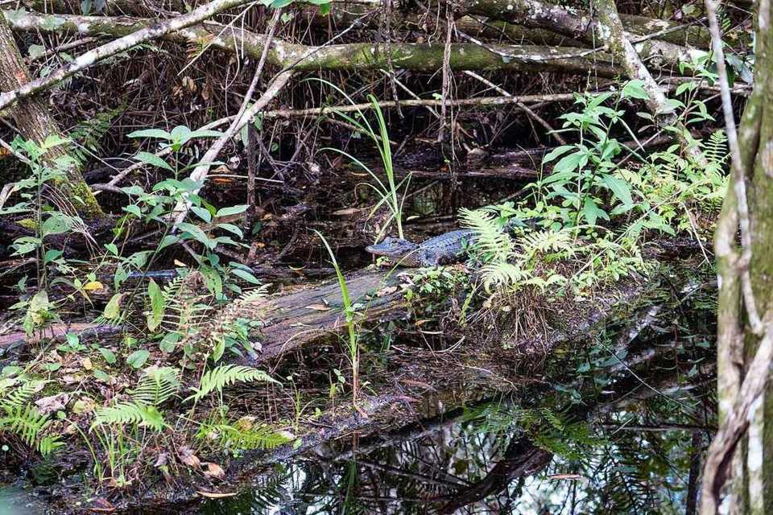
Is a spore just a tiny seed?
🌰 Part 2Some Plants Use Seeds
Many plants reproduce using seeds. A seed is a package. Inside its tough seed coat is a tiny baby plant, called an embryo, and stored food to help it start growing. A small scar, the hilum, shows where the seed was attached to its parent.
Seeds come from flowers, fruits, and cones. A seed that lands in a good spot, with water and warmth, can start to grow.
🧪 The Sieve or Water LabWhat makes a seed different from a spore?
What to do: Follow the steps one at a time. You will pick, test, and then explain.
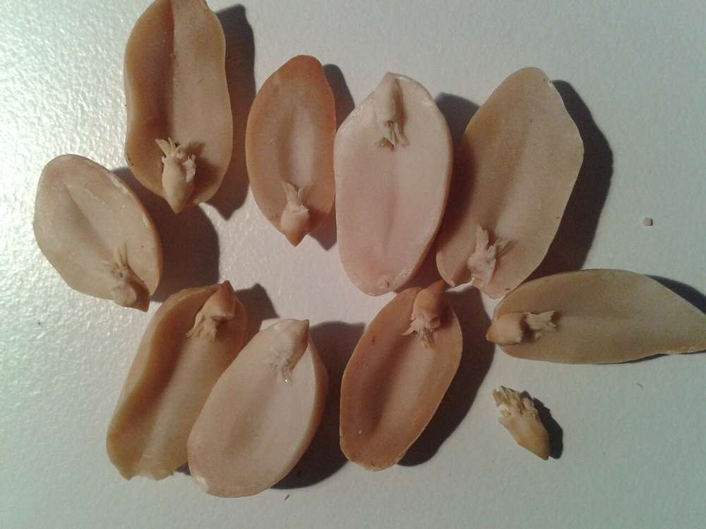
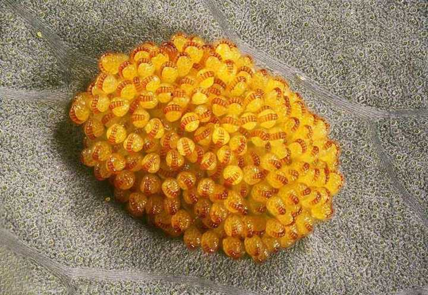
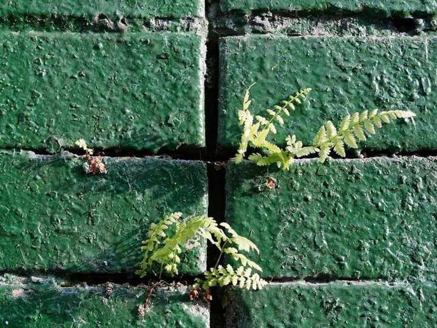
🔬 Part 3Scientists Classify with Evidence
How do scientists tell seeds and spores apart? They look at the evidence: size, where it came from, and what is inside. Botanists, scientists who study plants, sort plant parts this way.
Sometimes there isn't enough evidence to be sure. Then scientists write "not enough evidence" instead of guessing. That's more honest, and more useful.
🪨 Who came first?Ride down through the rock, from young layers to old
What to do: First, make a prediction. Then brush the glowing layer: drag across it (or tap it again and again) until the fossil shows.
Which kind of plant do you think lived on land first?
years ago160 million310 million430 million
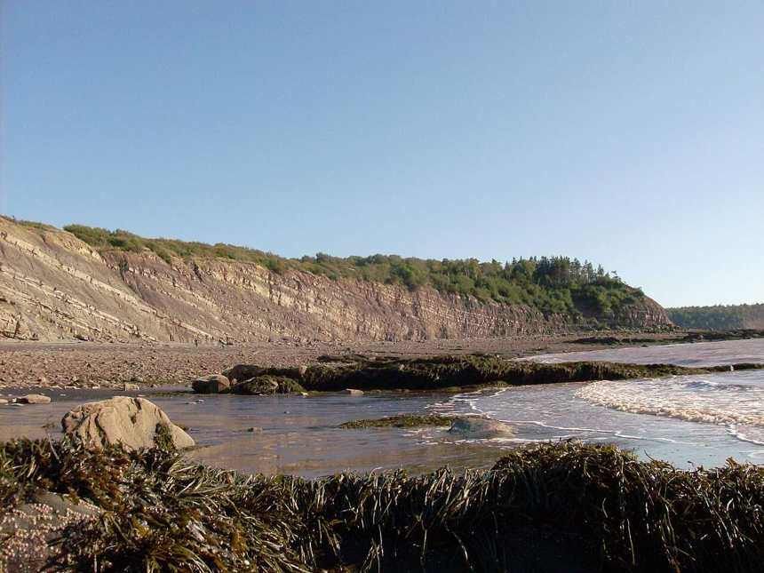
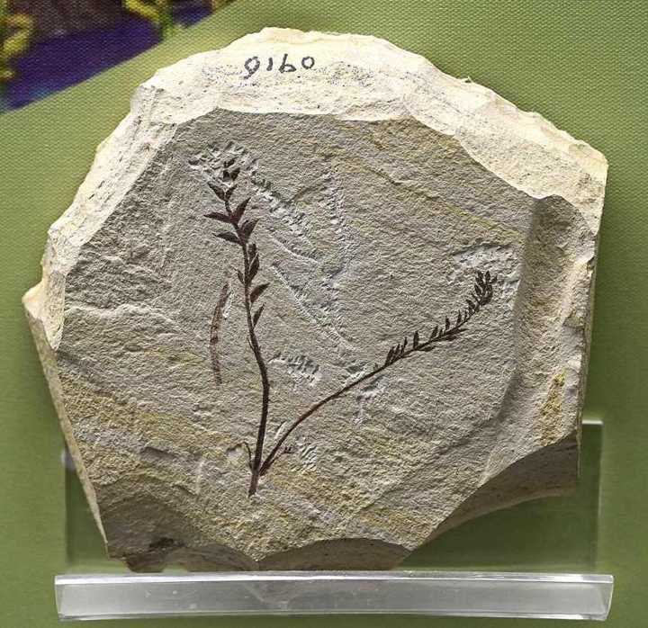
Layer 1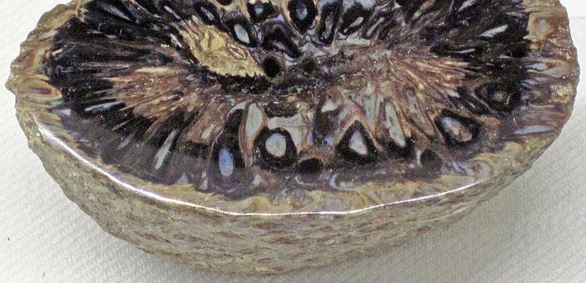
Layer 2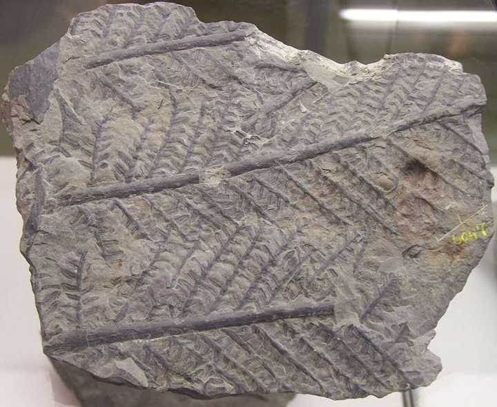
Layer 3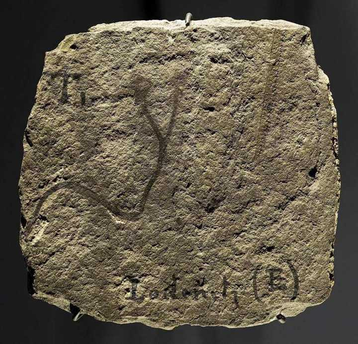
Layer 4Deeper layers are older. The oldest plant fossils are spore plants. Seeds in cones came later, and flowers came last. Scientists think spore plants grew on land long before seed plants.
Orchid seeds are as tiny as dust. Are they spores?
A 2,000-year-old seed that grew
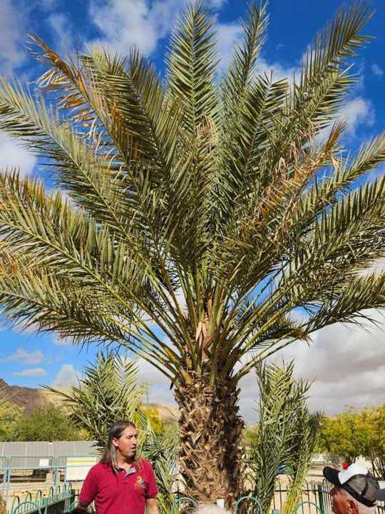
Long ago, people stored dates in a desert fortress in Israel. Scientists found some of the seeds. Tests showed they were about 2,000 years old. In 2005, scientists planted one, and it sprouted!
How? A seed is a package. Its tough coat kept the baby plant safe, and its stored food was still there when the seed finally got water.
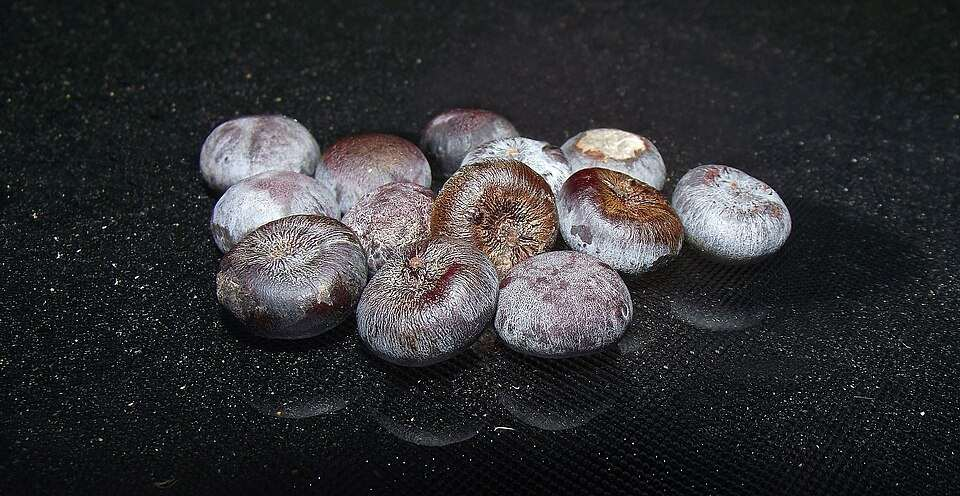
🗂️ Part 4Seed or Spore?
What to do: Pick 3 cards, one at a time. Tap a clue you see, then pick what it is. Predict seed or spore, and watch its home appear.
| Plant | What I observe | The clue | Seed or spore? | My evidence |
|---|
🌍 Rebuild the plant's homeUse your evidence to rebuild the plant's home OPTIONALOpen ▾
What to do: Pick one you solved. Pick the place it points to, then pick the living things that belong there.
Pick one from your chart and explain it.
Start with: "Plant __ has…"
Scene 3Self-Check
What do seeds and spores both help plants do?
A scientist finds fine, powdery dust on the underside of a fern leaf. What is it most likely?
A plant clue is a flat green leaf on a stem. Why does it go in "not enough evidence"?
Scene 4Assignment
🔍 Part ASort the plant clues
What to do: Read each one. Pick the best answer, or type your answer.
1. Clue A: It is found inside an apple, surrounded by soft fruit.
2. Clue B: It is a fine brown powder on the underside of a fern leaf.
3. Clue C: It has a hard protective outer coat and is about the size of an apple seed.
4. Clue D: It comes from moss and is too small to see without a magnifying glass.
5. Clue E: It falls from between the scales of a pine cone when the cone dries out.
6. Clue F: It is a flat green leaf attached to a plant stem.
7. Clue F got "not enough evidence." What would you need to see to sort that plant?
🚀 Part BShort answer
What to do: Answer in complete sentences. Use your science words.
1. How are seeds and spores alike? Name at least one thing they have in common.
2. How are seeds and spores different? Name at least two differences.
✍️ Write and explainWhat is the biggest difference?
What to do: Pick one from your evidence chart. Answer the three questions. Use at least one of the science words under the boxes.
Start with: "I think the biggest difference is…"
Start with: "I know this because Plant __ in my evidence chart…"
Start with: "This makes sense because…"
🎨 Part CDraw and label
What to do: Draw a seed and a spore cluster side by side. Label a part of the seed, and the spores.
🎬 Your question from Scene 1Can you answer it now?
What do you still wonder about? Write your question here. Then answer it.
📋 My answersEverything you wrote, in one place
(Your answers show up here as you write.)
How to turn in: Copy your answers and paste them into the Canvas assignment. Or download the file and upload it. Then press Save my drawing in Part C and upload your drawing too.
✅ Checklist
What to do: Tap each item when it is done. Items you finish on the page check themselves.
- My evidence chart has 3 plants and my explanation.
- Part A: all six clues sorted, and question 7.
- Part B: questions 1 and 2.
- Part C: my drawing and both labels.
- Write and explain, with at least one science word.
🎬 Premiere my seed-or-spore storyYour exhibit
What to do: Check your exhibit. Pick the one you wrote about, add your first name, then press Premiere film.
I observed…
I think it was…
My evidence…
It tells us…
🎞️ This film's frames
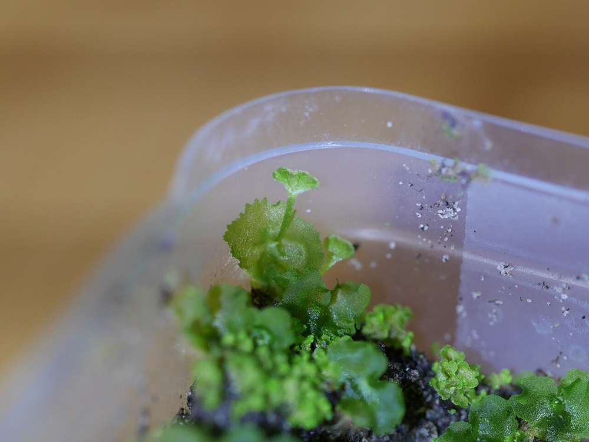
Spore to fern
The Sieve or Water Lab
Who came first?
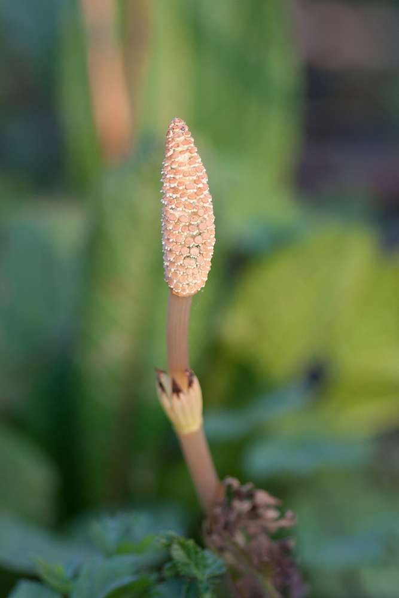
Seed or spore?
Earn all four frames in the Lesson, then finish the checklist.
🔜 Coming up next22.01 · How Do Humans Affect Ecosystems?
Next time, find out how people change the places where plants and animals live.
Photo and music credits
- Moscow, ferns on a brick wall 05, Retired electrician, CC0
- Peanut cotyledons, Jesusorizales, CC BY-SA 3.0
- Сорус папоротника Polypodium aureum, Anatoly Mikhaltsov, CC BY-SA 4.0
- Tillandsia usneoides flower (Scott Zona) 001, Scott Zona from Miami, Florida, USA, CC BY 2.0
- Southern live oak trees draped with Spanish moss, St. Augustine, Florida, EddieWexler, CC0
- Fakahatchee State Preserve - 52499293442, apasciuto, CC BY 2.0
- Swamp Walk at Gatorland, Orlando FL (8212718858), Rusty Clark ~ 100K Photos, CC BY 2.0
- FieldTrip FL 2008 - 096, sgharvey@ymail.com, CC BY 2.0
- Coontie open seed cone 2, Donald Albury, CC BY-SA 4.0
- Coontie, Alfred B. Maclay Gardens State Park, Michael Rivera, CC BY-SA 4.0
- Equisetum arvense strobilus, Von.grzanka, CC BY-SA 3.0
- Equisetum hyemale @ Lovagny (49104063297), Guilhem Vellut from Annecy, France, CC BY 2.0
- Calypso orchids 7 - topaz rotated calypso seeds on silver dollar pyramid stac…, Clayhill1, CC BY-SA 4.0
- Southern Magnolia in Tampa, Florida, MathewTownsend, CC BY-SA 3.0
- Pinus palustris female cone (01), Aaron Liston, CC BY 4.0
- Cyathea capensis - Forest Tree Fern - Cape Town 4, Abu Shawka, Public domain
- Moss plants with sporangia.(capsules), Krishna satya 333, CC0
- Ghost Orchid (4577741445), USFWS/Southeast, Public domain
- Large Ghost Orchid (20087498016), USFWS/Southeast, Public domain
- Date Palm seeds July 2010, Supportstorm, Public domain
- Archaefructus liaoningensis BMNHC, Jonathan Chen, CC BY 4.0
- Araucaria mirabilis (fossil cone) (Jurassic; Argentina) (49021443726), James St. John, CC BY 2.0
- Pecopteris polymorpha, Woudloper, Public domain
- Cooksonia barrandei (National Museum in Prague) (cropped), Skot, CC BY-SA 4.0
- Seeds of Wild Orchid in NL, Donea almir, CC0
- Spores under a fern leaf, kaibara87, CC BY 2.0
- Asplenium scolopendrium prothallus, ThomasSpectre, CC0
- Jeune sporophyte d'Asplenium scolopendrium, ThomasSpectre, CC0
- Starr-110330-3632-Spathoglottis plicata-seed capsule-Garden of Eden Keanae-Ma…, Forest and Kim Starr, CC BY 3.0 us
- Fakahatchee State Preserve - 52500258065, apasciuto, CC BY 2.0
- Joggins Fossil Cliffs, Joggins, Nova Scotia 01, Gorob, CC BY-SA 3.0
- Peanuts (Arachis hypogaea) - in shell, shell cracked open, shelled, peeled, Ivar Leidus, CC BY-SA 4.0
- Polypodium glycyrrhiza spores, Vlisch, CC BY 4.0
- Fakahatchee Strand (35510245643), formulanone from Huntsville, United States, CC BY-SA 2.0
- Methuselah date palm tree from a 2000 year old seed, GOLANYASSAF, CC BY 4.0
- Music: Camille Saint-Saëns, The Swan (from The Carnival of the Animals), played by Alisa Weilerstein and Jason Yoder at the White House, 2009, public domain (Wikimedia Commons).
- Opti the owl: Optima Academy. Sound effects are made by the page. The spore-to-fern movie, the sieve and water lab and the rock-layer ride are models; every plant and fossil photo is real. The four order photos come from different ferns.